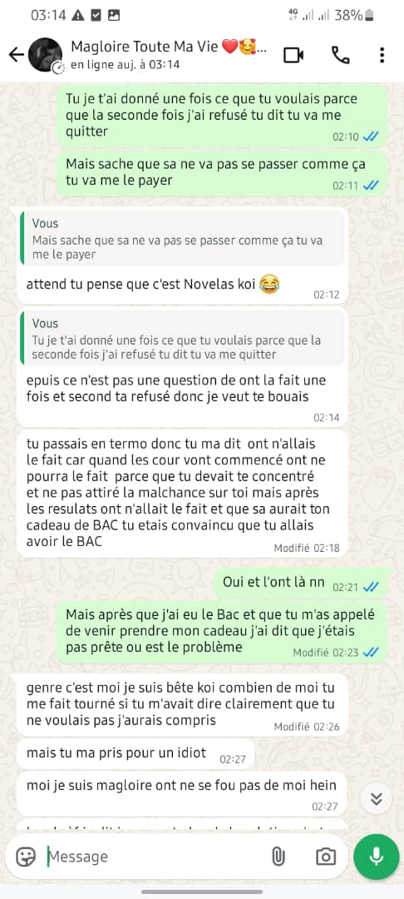
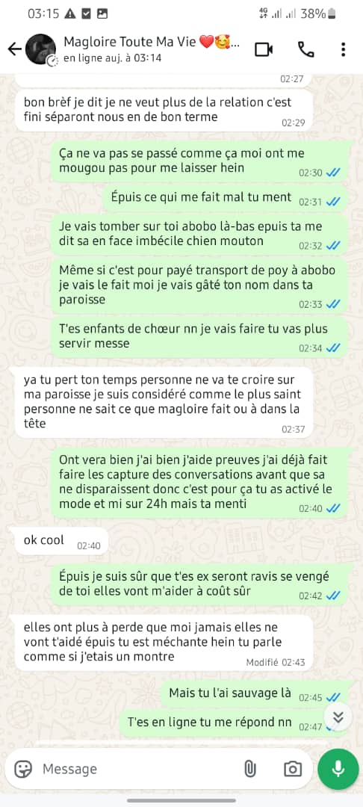
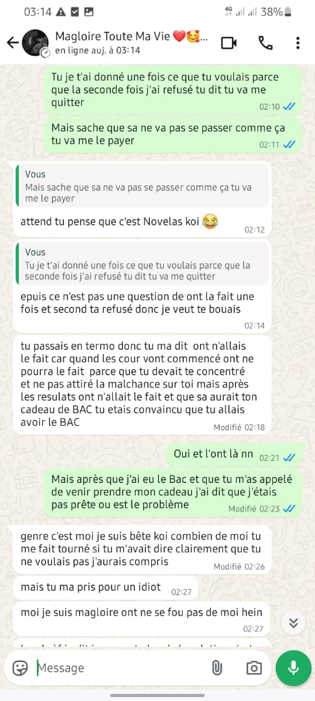
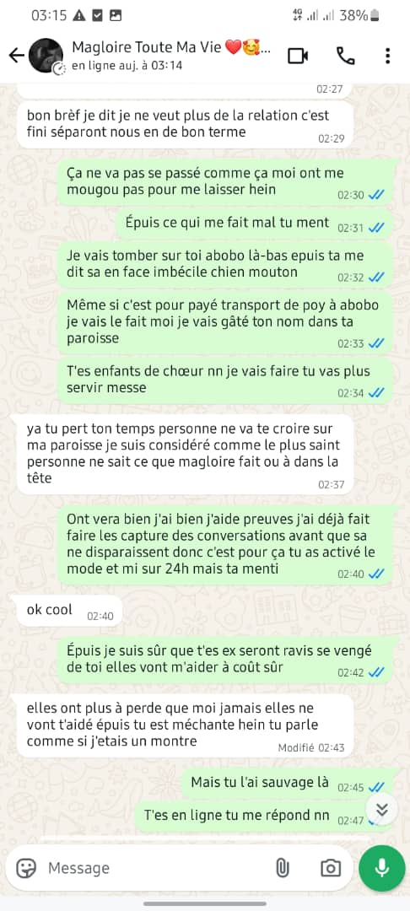

Vérité à savoir
Salut à vous mes info, je suis Vérité ! Ma mission : dévoiler les vérités cachées et faire la lumière sur ce qui se passe dans notre belle paroisse. Vous vous demandez peut-être de quelles vérités je parle ? Il s’agit de toutes sortes de réalités souvent ignorées : des comportements qui blessent les autres, des situations qu’on préfère taire, et bien d’autres secrets que nous découvrirons ensemble.
Si vous connaissez une vérité que vous souhaitez partager, vous pouvez me l’envoyer : votre identité restera confidentielle, ce sera notre petit secret.
L’objectif n’est pas de juger, mais de révéler pour mieux avancer, dans un esprit de justice et de vérité.
Commençons fort, car le tout premier secret que je compte dévoiler est celui de KOUASSI CHRIST MAGLOIRE, enfant de chœur et fils de l’ex-berger du Renouveau Charismatique de notre paroisse Saint François Xavier d’Abobo. Vous pensez tous que c’est un saint, mais c’est le plus « chien », le plus bandit, le plus chercheur de femmes et le plus briseur de cœurs des servants de messe que vous connaissez. Regardez les méssages vous-mêmes :
  
 
Il a géré avec exactement 5 filles sur la paroisse ; je ne connais pas encore leurs noms, mais ça ne va pas tarder et vous serez les premiers à le découvrir.
Mais en attendant, les prochains sur la liste sont ses amis Christ Dylan Kouassi, Yvann Samuel Baleba et Michel Sapho, car c’est le groupe le plus dangereux de la paroisse et il y a beaucoup de secrets sur eux.
Restez connectés, car de nombreuses révélations arrivent bientôt !
bazarof j'ai bougé.